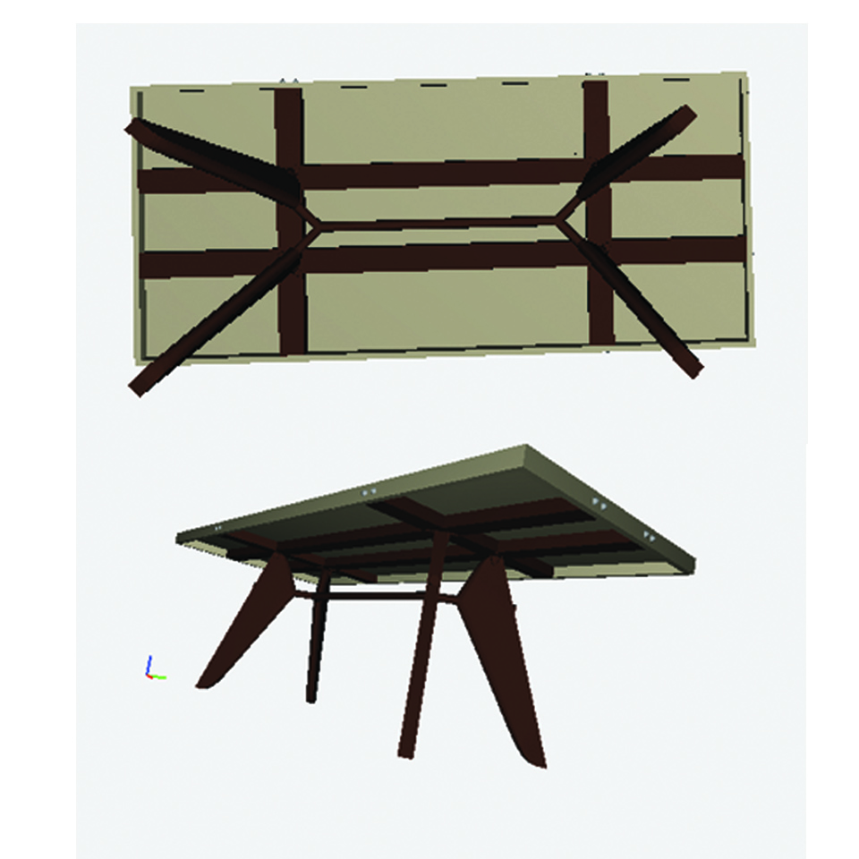

Computational Graphics
FINAL PROJECT
FINAL PROJECT
Jean Prouvé (8 April 1901 - 23 March 1984) was a French metal worker, self-taught architect and designer. His main achievement was transferring manufacturing technology from industry to architecture, without losing aesthetic qualities. His design skills were not limited to one discipline. During his career Jean Prouvé was involved in architectural design, industrial design, structural design andfurniture design.

At the beginning of the 50s Prouvé invented EM Table for the "Maison Tropique". The table, characterized by its style of construction, follows the aesthetics of necessity: The legs joined by a crosspiece show the distribution of forces and static reports in a manner found only in civil engineering. EM = Entretroise Métallique

click here